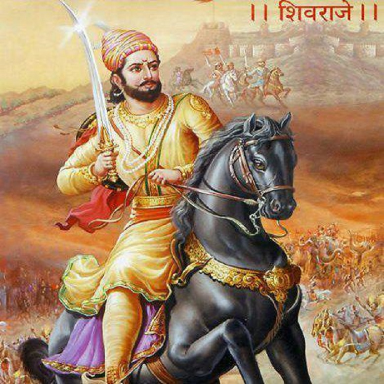

Edu
Shivaji maharaj

- Shivaji was born in the hill-fort of Shivneri, near the city of Junnar, which is now in Pune district. Scholars disagree on his date of birth. The Government of Maharashtra lists 19 February as a holiday commemorating Shivaji's birth (Shivaji Jayanti).
- Shivaji Bhonsale I (Marathi pronunciation: [ʃiʋaˑd͡ʒiˑ bʱoˑs(ə)leˑ]; c.19 February 1630 – 3 April 1680[5]), also referred to as Chhatrapati Shivaji, was an Indian ruler and a member of the Bhonsle Maratha clan.
- Shivaji carved out an enclave from the declining Adilshahi sultanate of Bijapur that formed the genesis of the Maratha Empire. In 1674, he was formally crowned the Chhatrapati of his realm at Raigad Fort.
- Shivaji escaped from Panhala by cover of night, and as he was pursued by the enemy cavalry, his Maratha sardar Baji Prabhu Deshpande of Bandal Deshmukh, along with 300 soldiers, volunteered to fight to the death to hold back the enemy at Ghod Khind ("horse ravine") to give Shivaji and the rest of the army a chance to reach the safety of the Vishalgad fort.
- In the ensuing Battle of Pavan Khind, the smaller Maratha force held back the larger enemy to buy time for Shivaji to escape. Baji Prabhu Deshpande was wounded but continued to fight until he heard the sound of cannon fire from Vishalgad, signalling Shivaji had safely reached the fort, on the evening of 13 July 1660.
- Upon the request of Badi Begum of Bijapur, Aurangzeb, now the Mughal emperor, sent his maternal uncle Shaista Khan, with an army numbering over 150,000 along with a powerful artillery division in January 1660 to attack Shivaji in conjunction with Bijapur's army led by Siddi Jauhar.
Bhagat singh
 Bhagat Singh (27 September 1907[a] – 23 March 1931) was a charismatic Indian revolutionary[6] who participated in the mistaken murder of a junior British police officer[7] in what was to be retaliation for the death of an Indian nationalist.
He later took part in a largely symbolic bombing of the Central Legislative Assembly in Delhi and a hunger strike in prison, which—on the back of sympathetic coverage in Indian-owned newspapers—turned him into a household name in Punjab region, and after his execution at age 23 into a martyr and folk hero in Northern India.
In December 1928, Bhagat Singh and an associate, Shivaram Rajguru, both members of a small revolutionary group, the Hindustan Socialist Republican Association (also Army, or HSRA), shot dead a 21-year-old British police officer, John Saunders, in Lahore, Punjab, in what is today Pakistan, mistaking Saunders, who was still on probation, for the British senior police superintendent, James Scott, whom they had intended to assassinate.
They held Scott responsible for the death of a popular Indian nationalist leader Lala Lajpat Rai for having ordered a lathi (baton) charge in which Rai was injured and two weeks thereafter died of a heart attack. As Saunders exited a police station on a motorcycle, he was felled by a single bullet fired from across the street by Rajguru, a marksman.
As he lay injured, he was shot at close range several times by Singh, the postmortem report showing eight bullet wounds.[19] Another associate of Singh, Chandra Shekhar Azad, shot dead an Indian police head constable, Channan Singh, who attempted to give chase as Singh and Rajguru fled.
Bhagat Singh (27 September 1907[a] – 23 March 1931) was a charismatic Indian revolutionary[6] who participated in the mistaken murder of a junior British police officer[7] in what was to be retaliation for the death of an Indian nationalist.
He later took part in a largely symbolic bombing of the Central Legislative Assembly in Delhi and a hunger strike in prison, which—on the back of sympathetic coverage in Indian-owned newspapers—turned him into a household name in Punjab region, and after his execution at age 23 into a martyr and folk hero in Northern India.
In December 1928, Bhagat Singh and an associate, Shivaram Rajguru, both members of a small revolutionary group, the Hindustan Socialist Republican Association (also Army, or HSRA), shot dead a 21-year-old British police officer, John Saunders, in Lahore, Punjab, in what is today Pakistan, mistaking Saunders, who was still on probation, for the British senior police superintendent, James Scott, whom they had intended to assassinate.
They held Scott responsible for the death of a popular Indian nationalist leader Lala Lajpat Rai for having ordered a lathi (baton) charge in which Rai was injured and two weeks thereafter died of a heart attack. As Saunders exited a police station on a motorcycle, he was felled by a single bullet fired from across the street by Rajguru, a marksman.
As he lay injured, he was shot at close range several times by Singh, the postmortem report showing eight bullet wounds.[19] Another associate of Singh, Chandra Shekhar Azad, shot dead an Indian police head constable, Channan Singh, who attempted to give chase as Singh and Rajguru fled.